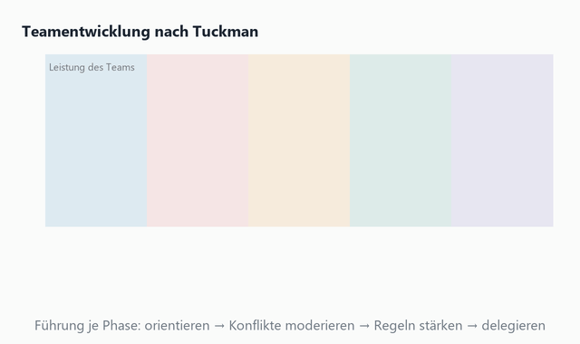
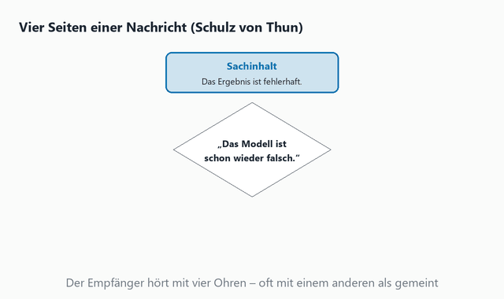
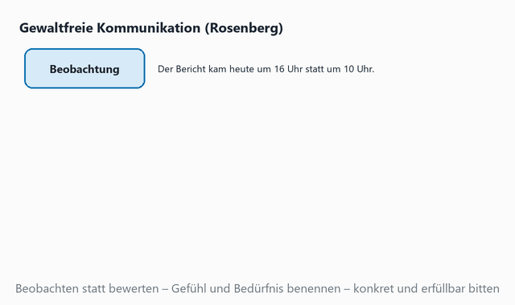

Zukunftskompetenzen: selbst organisiert, kritisch, kooperativ, verständlich
KI übernimmt Routinen – umso wichtiger werden Fähigkeiten, die Menschen auszeichnen: sich selbst organisieren und widerstandsfähig bleiben, kritisch denken (auch gegenüber KI-Ergebnissen), in interdisziplinären und internationalen Teams zusammenarbeiten, Probleme strukturiert lösen und klar kommunizieren. Dieses Modul bereitet Sie zugleich auf Präsentation und Fachgespräch in der Prüfung vor.
Warum Zukunftskompetenzen? Arbeit im Wandel durch KI
Der Taschenrechner hat das Kopfrechnen nicht überflüssig gemacht – aber wichtiger wurde, ob man die richtige Rechnung aufstellt und ein falsches Ergebnis erkennt. Mit KI ist es ähnlich, nur in viel mehr Tätigkeiten.
§ 9 der Rechtsvorschrift nennt drei Bereiche: Selbstkompetenz (Selbstorganisation, Resilienz, kritisches Denken, Reflexion), Kooperation und Kommunikation (kollaboratives Arbeiten, interdisziplinäre Teams, Problemlösung, Kommunikation) und interkulturelle Zusammenarbeit mit Zeitmanagement und Interdisziplinarität.
Wenn KI Texte entwirft, Daten auswertet und Vorschläge macht, verschiebt sich die Arbeit hin zu: Fragen richtig stellen, Ergebnisse prüfen und verantworten, mit Menschen abstimmen, Unsicherheit aushalten, ständig dazulernen.
Je mehr KI kann, desto wichtiger werden Urteilskraft, Zusammenarbeit, Kommunikation und Lernfähigkeit.
Selbstorganisation: Ziele, Planung, Werkzeuge
- Ziele: SMART formulieren, auf Wochen- und Tagesziele herunterbrechen.
- Planen: Aufgaben sammeln (eine Liste statt vieler Zettel), priorisieren (Eisenhower), Zeit blocken, Puffer einplanen.
- Werkzeuge: Aufgabenlisten, Kanban-Board (Modul 9), Kalender, Notizsystem; KI-Assistenten für Entwürfe, Zusammenfassungen und Erinnerungen – mit freigegebenen Werkzeugen.
- Routinen: Wochenrückblick (Was habe ich geschafft? Was blockiert?), feste Zeiten für konzentrierte Arbeit, E-Mails gebündelt bearbeiten.
Selbstorganisation = klare Ziele, ein zentrales System für Aufgaben, Prioritäten, Zeitblöcke und regelmäßige Rückschau.
Resilienz: Faktoren und wie Führungskräfte sie fördern
Ein Stehaufmännchen fällt um – und richtet sich wieder auf. Resilienz ist diese Fähigkeit, Belastungen zu bewältigen und gestärkt daraus hervorzugehen.
Häufig genannte Resilienzfaktoren: Optimismus, Akzeptanz, Lösungsorientierung, Selbstwirksamkeit (Vertrauen in die eigene Wirksamkeit), Verantwortung übernehmen, Netzwerk und Beziehungen, Zukunftsplanung.
Führungskräfte fördern Resilienz, indem sie Ressourcen sichern (realistische Ziele, Zeit, Unterstützung), Handlungsspielraum geben, Fehler als Lernchance behandeln, psychologische Sicherheit schaffen, Belastungen früh ansprechen und selbst Vorbild sind (Pausen, Erreichbarkeit). Organisationale Resilienz kommt dazu: Notfallpläne, Redundanzen, Wissensverteilung.
Resilienz ist erlernbar: Faktoren stärken, Ressourcen sichern, Netzwerk pflegen – und als Führungskraft Rahmen dafür schaffen.
Critical Thinking: Behauptungen prüfen, Denkfehler erkennen
| Denkfehler | Beschreibung | Beispiel |
|---|---|---|
| Bestätigungsfehler | nur Informationen suchen, die die eigene Meinung stützen | nur Erfolgsberichte über das Lieblingstool lesen |
| Ankereffekt | eine erste Zahl prägt die Schätzung | Anbieter nennt „Einsparung bis 70 %“ – Planung startet dort |
| Verfügbarkeitsheuristik | was leicht einfällt, wirkt häufiger | ein spektakulärer KI-Fehler in den Medien prägt die Risikoeinschätzung |
| Überlebenden-Fehler | nur Erfolge betrachten, Misserfolge fehlen | „Alle bekannten KI-Projekte haben sich gelohnt“ |
| Korrelation ≠ Kausalität | Zusammenhang wird als Ursache gedeutet | Filialen mit KI-Kasse haben mehr Umsatz – liegen aber auch in größeren Städten |
Behauptungen prüfen: Wer sagt das, mit welchem Interesse? Welche Daten stützen es, wie groß ist die Stichprobe, gibt es eine Vergleichsgruppe? Was spricht dagegen? Was müsste wahr sein, damit es stimmt?
Kritisch denken heißt: Quellen, Daten und Gegenargumente prüfen – und die eigenen Denkfehler kennen.
Kritisches Denken mit KI: Quellen, Halluzinationen, Automation Bias

- Halluzinationen: Sprachmodelle erzeugen plausibel klingende, aber falsche Aussagen, Zitate und Quellen. Wichtiges gegen Primärquellen prüfen.
- Quellen: Systeme mit Quellenangaben (RAG) erleichtern die Prüfung – die Quelle selbst trotzdem öffnen.
- Automation Bias: Menschen vertrauen maschinellen Vorschlägen zu sehr. Gegenmittel: Begründungspflicht, Unsicherheit und Erklärungen anzeigen, Stichproben, Schulung, Abweichungen ausdrücklich erlauben.
- Gegen-Prompting: die KI nach Gegenargumenten, Schwachstellen und Annahmen fragen.
KI-Ergebnisse sind Entwürfe: prüfen, Quellen öffnen, Gegenargumente suchen – die Verantwortung bleibt beim Menschen.
„Warum ist Automation Bias gefährlich, und was tun Sie dagegen?“ – Menschen übernehmen Vorschläge ungeprüft, Fehler bleiben unentdeckt; Gegenmaßnahmen nennen (mindestens drei).
Selbstreflexion: Johari-Fenster, Feedback, Lerntagebuch

Reflexionsfragen: Was lief gut, was nicht, und warum? Was war mein Anteil? Was mache ich nächstes Mal anders? Werkzeuge: Lerntagebuch, kollegiale Beratung, 360-Grad-Feedback, Retrospektiven.
Selbstreflexion braucht den Blick von außen (Feedback) und den Mut, Verborgenes zu teilen.
Kollaboratives Arbeiten: Werkzeuge, Regeln, remote und hybrid
| Bereich | Gute Praxis |
|---|---|
| Werkzeuge | gemeinsame Dokumente, Chat, Videokonferenz, Kanban-Board, Wiki – mit klarer Zuordnung, was wohin gehört |
| Kommunikationsregeln | Reaktionszeiten, Kanäle nach Dringlichkeit, asynchron vor synchron, Entscheidungen schriftlich festhalten |
| Besprechungen | Ziel und Agenda vorab, Moderation, Zeitbox, Ergebnisse und Aufgaben mit Verantwortlichen |
| Remote und hybrid | gleiche Chancen für Anwesende und Zugeschaltete, Kamera-Absprachen, regelmäßige Treffen vor Ort, informeller Austausch |
| KI im Team | Protokolle und Zusammenfassungen, Übersetzung – nach Zustimmung und mit freigegebenen Werkzeugen |
Gute Zusammenarbeit braucht wenige, klar geregelte Werkzeuge und Absprachen – besonders, wenn das Team verteilt arbeitet.
Teams entwickeln: Phasen nach Tuckman, Teamrollen nach Belbin

| Orientierung | Teamrollen nach Belbin |
|---|---|
| handlungsorientiert | Macher (treibt an), Umsetzer (setzt Pläne um), Perfektionist (achtet auf Details und Termine) |
| kommunikationsorientiert | Koordinator (führt zusammen), Teamarbeiter (fördert Zusammenhalt), Wegbereiter (knüpft Kontakte, holt Ressourcen) |
| wissensorientiert | Neuerer/Erfinder (bringt Ideen), Beobachter (prüft nüchtern), Spezialist (Fachwissen) |
Tuckman: Forming, Storming, Norming, Performing, Adjourning. Belbin: Ein gutes Team mischt handlungs-, kommunikations- und wissensorientierte Rollen.
Interdisziplinäre Teams: Vorteile, Reibungen, Förderung
Verschiedene Sichtweisen (Technik, Fachbereich, Recht, Betrieb) führen zu besseren, umsetzbaren Lösungen; Fehler werden früher erkannt; Akzeptanz steigt.
Unterschiedliche Fachsprachen („Präzision“ heißt im Fachbereich etwas anderes als in der Statistik), Ziele und Arbeitskulturen, Statusunterschiede, „Übersetzungsverluste“.
Förderung: gemeinsames Ziel und Nutzen sichtbar machen, Glossar mit Begriffen, „Übersetzer“-Rollen (z. B. Product Owner, Business Analyst), gemeinsame Workshops und Demos, Wertschätzung aller Beiträge, psychologische Sicherheit.
Interdisziplinarität ist ein Vorteil, wenn man Sprache, Ziele und Arbeitsweisen bewusst verbindet.
Problemlösemethoden: 5-Why, Ishikawa, Design Thinking, A3

| Methode | Vorgehen |
|---|---|
| 5-Why | fünfmal „Warum?“ fragen, bis die Grundursache erreicht ist |
| Ishikawa | Ursachen nach 6 M sammeln, dann die wichtigsten prüfen |
| Design Thinking | nutzerzentriert vom Problem zur getesteten Lösung (Modul 10) |
| A3-Report | auf einer Seite: Hintergrund, Ist-Zustand, Ziel, Ursachenanalyse, Maßnahmen, Plan, Nachverfolgung |
5-Why-Beispiel: Die Prognose war falsch. – Warum? Die Daten der letzten Woche fehlten. – Warum? Der Import schlug fehl. – Warum? Das Dateiformat des Lieferanten änderte sich. – Warum? Es gibt keine Vereinbarung zum Format. – Warum? Datenlieferungen sind vertraglich nicht geregelt. → Maßnahme: Datenvertrag mit Formatvorgaben und automatische Prüfung beim Import.
Erst Ursachen verstehen, dann lösen: 5-Why für die Tiefe, Ishikawa für die Breite, A3 für die Darstellung.
Kommunikationsmodelle: Schulz von Thun, Watzlawick, Sender-Empfänger

- Sender-Empfänger-Modell (Shannon/Weaver): Nachricht wird codiert, übertragen und decodiert; Störungen verfälschen sie.
- Schulz von Thun: Jede Nachricht hat Sachinhalt, Selbstkundgabe, Beziehung und Appell; der Empfänger hört mit „vier Ohren“.
- Watzlawick: „Man kann nicht nicht kommunizieren.“ Jede Kommunikation hat einen Inhalts- und einen Beziehungsaspekt, der Beziehungsaspekt bestimmt, wie der Inhalt verstanden wird.
Missverständnisse entstehen oft auf der Beziehungsebene – nachfragen, welche Seite gemeint war.
Vier-Seiten-Analyse in der Prüfung: zu jeder Seite einen Satz formulieren, wie in der Animation.
Kommunikationsmethoden: aktives Zuhören, Ich-Botschaften, gewaltfreie Kommunikation

| Methode | Kern |
|---|---|
| Aktives Zuhören | Aufmerksamkeit zeigen, paraphrasieren („Sie meinen also …“), nachfragen, Gefühle spiegeln, nicht sofort bewerten |
| Ich-Botschaften | „Ich habe den Eindruck …“ statt „Du machst immer …“ |
| Offene Fragen | W-Fragen statt Ja/Nein-Fragen |
| Gewaltfreie Kommunikation | Beobachtung ohne Bewertung, Gefühl, Bedürfnis, konkrete Bitte |
Zuhören, nachfragen, aus der eigenen Sicht sprechen und konkret bitten – so bleiben Gespräche sachlich.
Präsentieren und überzeugen – auch vor dem Prüfungsausschuss
- Zielgruppe: Was wissen die Zuhörenden, was wollen sie entscheiden? Der Prüfungsausschuss will Ihre Handlungskompetenz sehen: Problem verstehen, Lösung begründen, Wirkung belegen, reflektieren.
- Aufbau: Einstieg mit Problem und Ziel, Kernaussage früh, Vorgehen, Ergebnis mit Zahlen, Wirtschaftlichkeit und Risiken, Fazit und Ausblick, Reflexion.
- Folien: eine Aussage je Folie, Überschrift als Satz, wenig Text, aussagekräftige Grafiken, lesbare Schrift.
- Auftreten: frei sprechen, Blickkontakt, Pausen, Zeit einhalten (Bachelor: Präsentation mindestens 20 Minuten; Präsentation und Fachgespräch zusammen höchstens 60 Minuten).
- Fachgespräch: Rückfragen als Chance sehen, kurz und strukturiert antworten, Grenzen ehrlich benennen, Bezüge zu anderen Handlungsbereichen (Recht, Wirtschaftlichkeit, Personal) herstellen.
Überzeugen heißt: klare Kernaussage, belegte Ergebnisse, offen benannte Grenzen – passend zur Zielgruppe.
Proben Sie die Präsentation mit Stoppuhr und lassen Sie sich von Kolleginnen „Prüfungsfragen“ stellen. Der Transfer-Simulator in Modul 19 hilft dabei.
Interkulturelle Zusammenarbeit: Kulturdimensionen nach Hofstede
| Dimension | Frage | Wirkung im Team |
|---|---|---|
| Machtdistanz | Wie stark werden Hierarchieunterschiede akzeptiert? | Wer entscheidet? Wird Kritik an Vorgesetzten offen geäußert? |
| Individualismus / Kollektivismus | Ich oder Wir? | Einzelleistung vs. Gruppenloyalität, Feedback öffentlich oder vertraulich |
| Maskulinität / Femininität | Wettbewerb und Leistung oder Fürsorge und Lebensqualität? | Umgang mit Erfolg, Konflikt, Arbeitszeit |
| Unsicherheitsvermeidung | Wie stark werden Regeln und Planbarkeit gewünscht? | detaillierte Pläne vs. Improvisation |
| Langzeitorientierung | kurzfristige Ergebnisse oder langfristige Ziele? | Geduld bei Investitionen, Traditionen |
| Nachgiebigkeit / Beherrschung | Wie frei werden Bedürfnisse ausgelebt? | Umgang mit Freizeit und Spaß bei der Arbeit |
Kulturdimensionen beschreiben Durchschnittswerte von Ländern, nicht einzelne Menschen – sie helfen, Unterschiede zu verstehen, ohne Klischees zu bedienen. Praxis: Erwartungen offen klären (Entscheidungswege, Feedback, Termine), schriftlich zusammenfassen, Zeitzonen fair verteilen, Sprache einfach halten.
Hofstede erklärt typische Unterschiede – im Team zählt, Erwartungen offen auszusprechen und gemeinsame Regeln zu vereinbaren.
Zeitmanagement: Methoden im Vergleich
| Methode | Kern | passt für |
|---|---|---|
| Eisenhower | wichtig / dringend | Prioritäten setzen |
| ALPEN | Aufgaben, Länge, Puffer (~40 %), Entscheidungen, Nachkontrolle | Tagesplanung |
| Pareto | 80/20 | Aufwand fokussieren |
| Pomodoro | 25 Minuten konzentriert, 5 Minuten Pause | konzentriertes Arbeiten |
| Timeboxing | feste Zeit für eine Aufgabe, danach Ergebnis bewerten | Perfektionismus begrenzen |
| Getting Things Done | alles erfassen, klären, organisieren, überprüfen, erledigen | viele parallele Themen |
Keine Methode passt für alles – kombinieren: priorisieren (Eisenhower), planen (ALPEN), fokussiert arbeiten (Pomodoro, Timeboxing).
Agiles Arbeiten im Alltag: Retrospektive, Timeboxing, Visualisierung
- Retrospektive: regelmäßig fragen „Was lief gut? Was nicht? Was probieren wir als Nächstes?“ – auch außerhalb von Scrum, etwa nach jedem Monat oder Meilenstein.
- Timeboxing: Besprechungen und Aufgaben zeitlich begrenzen; am Ende entscheiden: fertig, verlängern oder anders angehen.
- Visualisierung: Aufgaben, Ziele und Hindernisse sichtbar machen (Kanban-Board, Kennzahlen am Teamboard).
- Kleine Schritte: früh Zwischenergebnisse zeigen, Feedback holen, anpassen.
Agil arbeiten heißt im Alltag: sichtbar machen, Zeit begrenzen, regelmäßig zurückblicken und in kleinen Schritten verbessern.
Übungen mit Musterlösung
Tragen Sie Ihre Antworten in die Felder ein.
Aufgabe 1: Denkfehler
4 Punkte1. Die Projektleiterin liest nur Berichte, die ihr Lieblingstool loben. 2. Der Anbieter nennt „bis zu 70 % Einsparung“, die Planung startet bei 60 %. 3. Man untersucht nur erfolgreiche KI-Projekte, um Erfolgsfaktoren abzuleiten. 4. Ein Sachbearbeiter übernimmt alle KI-Vorschläge ungeprüft.
Lösung anzeigen
1. Bestätigungsfehler · 2. Ankereffekt · 3. Überlebenden-Fehler · 4. Automation Bias. Je 1 Punkt.
Aufgabe 2: Vier-Seiten-Modell
4 PunkteEin Teammitglied sagt im Meeting: „Das Modell ist schon wieder falsch.“ Analysieren Sie die Aussage mit dem Vier-Seiten-Modell.
Lösung anzeigen
Sachinhalt: Das Ergebnis ist fehlerhaft, und das nicht zum ersten Mal · Selbstkundgabe: Ich bin frustriert oder besorgt · Beziehung: Ihr arbeitet nicht sorgfältig (möglicher Vorwurf) · Appell: Ändert das, prüft gründlicher. Je 1 Punkt.
Aufgabe 3: Teamphasen
4 Punkte1. Das Team streitet über Zuständigkeiten. 2. Alle sind höflich und warten ab. 3. Das Team vereinbart Regeln für Code-Reviews. 4. Das Team arbeitet selbstständig mit hoher Leistung.
Lösung anzeigen
1. Storming · 2. Forming · 3. Norming · 4. Performing. Je 1 Punkt.
Aufgabe 4: Teamrollen nach Belbin
4 Punkte1. Bringt immer neue, ungewöhnliche Ideen ein. 2. Prüft Vorschläge nüchtern und kritisch. 3. Treibt das Team an, auch unter Druck. 4. Achtet auf Details, Fehler und Termine.
Lösung anzeigen
1. Neuerer/Erfinder · 2. Beobachter · 3. Macher · 4. Perfektionist. Je 1 Punkt.
Aufgabe 5: 5-Why
3 PunkteDer KI-Chatbot gibt seit einer Woche falsche Lieferzeiten an. Führen Sie eine plausible 5-Why-Analyse durch und leiten Sie eine Maßnahme ab.
Lösung anzeigen
Beispiel: falsche Lieferzeiten – Warum? Der Bot nutzt veraltete Daten. – Warum? Die Schnittstelle zum Lager liefert seit dem Update nichts. – Warum? Das Lagersystem hat das Feldformat geändert. – Warum? Änderungen werden dem KI-Team nicht gemeldet. – Warum? Es gibt keinen Änderungsprozess für Schnittstellen. → Maßnahme: Änderungsmanagement und automatische Datenprüfung mit Alarm (2 P. Kette, 1 P. Maßnahme).
Aufgabe 6: Ishikawa
4 PunkteOrdnen Sie die Ursachen den 6 M zu: 1. Veraltete Trainingsdaten. 2. Beschäftigte sind nicht geschult. 3. Zu schwache Hardware. 4. Plötzliche Marktveränderung.
Lösung anzeigen
1. Material (Daten) · 2. Mensch · 3. Maschine · 4. Mitwelt. Je 1 Punkt.
Aufgabe 7: Gewaltfreie Kommunikation
4 PunkteEin Kollege liefert zum dritten Mal Daten ohne Beschreibung der Spalten. Formulieren Sie eine Nachricht nach den vier Schritten der gewaltfreien Kommunikation.
Lösung anzeigen
Beispiel: „Die letzten drei Datenlieferungen kamen ohne Beschreibung der Spalten (Beobachtung). Ich bin dann unsicher und verliere viel Zeit (Gefühl), weil ich verstehen muss, was die Werte bedeuten, bevor ich das Modell trainiere (Bedürfnis). Kannst du künftig jeder Lieferung eine kurze Spaltenbeschreibung beilegen – ich schicke dir gern eine Vorlage? (Bitte)“ Je Schritt 1 Punkt.
Aufgabe 8: Kulturdimensionen
3 PunkteWelche Dimension nach Hofstede erklärt am ehesten: 1. Ein Teil des Teams erwartet, dass die Vorgesetzte entscheidet. 2. Ein Teil wünscht sehr detaillierte Pläne und Regeln. 3. Ein Teil betont Gruppenloyalität, der andere persönliche Leistung.
Lösung anzeigen
1. Machtdistanz · 2. Unsicherheitsvermeidung · 3. Individualismus/Kollektivismus. Je 1 Punkt.
Aufgabe 9: Automation Bias
3 PunkteWarum ist Automation Bias in KI-gestützten Prozessen gefährlich, und was tun Sie dagegen? Nennen Sie mindestens zwei Maßnahmen.
Lösung anzeigen
Menschen übernehmen Vorschläge ungeprüft, Fehler der KI bleiben unentdeckt; die menschliche Aufsicht wird zur Formalität (1 P.). Maßnahmen: Begründungspflicht bei Übernahme, Erklärungen und Unsicherheit anzeigen, Stichprobenkontrollen, Schulung, Abweichungen ausdrücklich erlauben, Arbeitsbelastung so gestalten, dass Prüfen möglich ist (2 P.).
Aufgabe 10: Johari-Fenster
3 Punkte1. Kollegen wissen, dass ich in Besprechungen oft unterbreche – ich nicht. 2. Ich weiß, dass ich vor Präsentationen sehr nervös bin – andere nicht. 3. Alle wissen, dass ich Data Scientist bin.
Lösung anzeigen
1. blinder Fleck · 2. verborgen · 3. öffentlich. Je 1 Punkt.
Aufgabe 11: Zeitmanagement
3 PunkteWelche Methode? 1. Aufgaben nach wichtig und dringend sortieren. 2. 25 Minuten konzentriert arbeiten, dann 5 Minuten Pause. 3. Tagesplan mit geschätzter Dauer und etwa 40 % Puffer.
Lösung anzeigen
1. Eisenhower · 2. Pomodoro · 3. ALPEN. Je 1 Punkt.
Aufgabe 12: Situationsaufgabe verteiltes KI-Team
8 PunkteSie leiten ein neues KI-Projektteam: Data Scientists in Indien, Entwickler in den Niederlanden, Fachexperten in Deutschland. Nach vier Wochen gibt es Spannungen: Die einen warten auf Ihre Entscheidungen, die anderen entscheiden eigenständig; Fachbegriffe werden unterschiedlich verstanden; zwei Personen wirken überlastet. Beschreiben Sie Ihr Vorgehen.
Lösung anzeigen
Einordnung (2 P.): Team in der Storming-Phase (Tuckman); unterschiedliche Erwartungen an Entscheidungen erklärbar durch Machtdistanz (Hofstede); Missverständnisse durch Fachsprachen (Interdisziplinarität). Zusammenarbeit (2 P.): Team-Vereinbarung mit Entscheidungsrahmen (wer entscheidet was), Kommunikationsregeln, faire Besprechungszeiten über Zeitzonen, Glossar, Entscheidungen schriftlich festhalten. Kommunikation (2 P.): Einzelgespräche mit aktivem Zuhören, Feedback in Ich-Botschaften, Retrospektive zur Klärung, Konflikte nach Harvard-Konzept. Belastung und Resilienz (2 P.): Aufgaben neu verteilen, Prioritäten mit Eisenhower klären, Puffer, Ressourcen sichern, psychologische Sicherheit, Vorbild bei Erreichbarkeit.
Abschlussquiz Modul 17
20 Fragen im Stil der schriftlichen Prüfung, jeweils eine richtige Antwort. Ab 14 richtigen Antworten (70 %) sind Sie gut vorbereitet.
Das Wichtigste auf einen Blick
Selbstorganisation
Ziele, ein System, Prioritäten, Zeitblöcke, Rückschau.
Resilienz
sieben Faktoren; Führung sichert Ressourcen und Sicherheit.
Kritisches Denken
Quellen, Daten, Gegenargumente; Denkfehler kennen.
Mit KI denken
Halluzinationen prüfen, Automation Bias vermeiden.
Reflexion
Johari-Fenster, Feedback, Lerntagebuch.
Teams
Tuckman-Phasen, Belbin-Rollen, interdisziplinär verbinden.
Probleme lösen
5-Why, Ishikawa (6 M), Design Thinking, A3.
Kommunikation
Vier Seiten, Watzlawick, aktives Zuhören, GFK.
Kultur
Hofstede-Dimensionen; Erwartungen offen klären.
Zeit und Agilität
Eisenhower, ALPEN, Pomodoro, Timeboxing, Retrospektive.
Glossar Modul 17
| Begriff | Erklärung |
|---|---|
| Automation Bias | übermäßiges Vertrauen in maschinelle Vorschläge |
| Bestätigungsfehler | Suche nach Informationen, die die eigene Meinung stützen |
| Gewaltfreie Kommunikation | Beobachtung, Gefühl, Bedürfnis, Bitte |
| Halluzination | plausibel klingende, aber falsche KI-Ausgabe |
| Ishikawa-Diagramm | Ursache-Wirkungs-Diagramm in Fischgrätform |
| Johari-Fenster | Modell von Selbst- und Fremdwahrnehmung |
| Machtdistanz | Akzeptanz ungleicher Machtverteilung (Hofstede) |
| Resilienz | psychische Widerstandsfähigkeit |
| Selbstwirksamkeit | Vertrauen, durch eigenes Handeln etwas zu bewirken |
| Tuckman-Modell | Phasen der Teamentwicklung |
Geschafft – alle Lernmodule sind abgeschlossen. Weiter mit Modul 18 (Probeprüfungen) und Modul 19 (Transfer-Simulator).